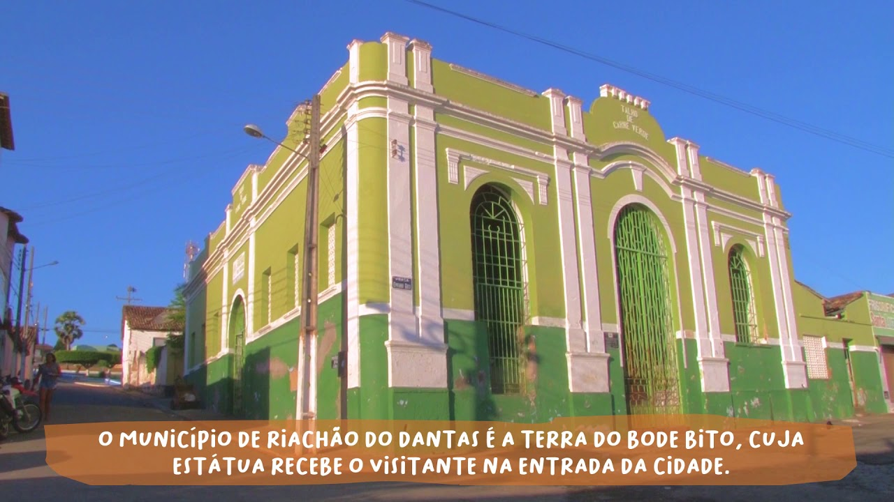

Riachão do Dantas
História
O nome da cidade se originou de um riacho, o Limeira, que passa próximo a cidade, a povoação era conhecida apenas como "Riachão". Em 1943, ganhou o complemento "do Dantas", em homenagem a João Dantas Martins dos Reis, o Comendador Dantas, chefe político de grande prestígio no tempo do Império do Brasil, chegando a ser vice-presidente da então Província de Sergipe. Foi proprietário do maior engenho da região, o Fortaleza, e um dos doadores do patrimônio da Paróquia Nossa Senhora do Amparo, a santa padroeira da cidade. O Comendador Dantas teve uma grande influência na criação do município, porém, foi João Martins Fontes, um dos principais fundadores da povoação então pertencente à Freguesia de Nossa Senhora da Piedade do Lagarto. As primeiras casas que formaram a cidade foram construídas nas suas terras, às margens do riacho do Limeira.
fonte: https://pt.wikipedia.org/wiki/Riach%C3%A3o_do_DantasDados Gerais de acordo com o IBGE
| Prefeito (a) | Simone Andrade Farias Silva |
| Vice-Prefeito (a) | Manuela Lisboa Costa |
| Site do município | https://riachaododantas.se.gov.br/ |
| Área territorial | 1530,607 km² |
| População estimada | 19.813 |
| Densidade demográfica | 36,48 hab/km² |
| IDHM | 0,539 |
| PIB per capita | R$ 15.300,22 |